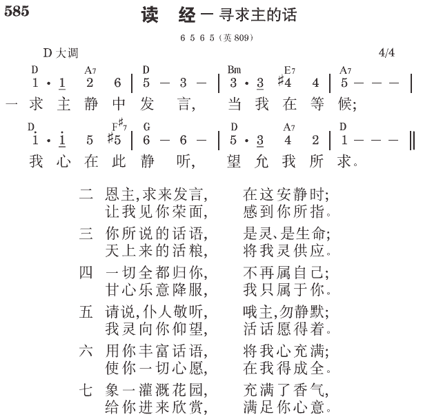

约6:63 赐人生命的乃是灵，肉是无益的；我对你们所说的话，就是灵，就是生命。
提后3:16 圣经都是神的呼出，对于教训、督责、改正、在义上的教导，都是有益的。
必须认识圣经
我们得救以后，要得着属灵的栽培，就不能不认识圣经。两千年来，基督徒都承认一件事，没有一个人不认识圣经，而能好好认识主。
神给我们属灵的产业，一面是看不见的圣灵，一面是看得见的圣经。一面是圣灵在我们里面，一面是圣经在我们外面。一个正确的基督徒，对这两面该是绝对平衡的。若是你里头满有圣灵，也在外面认识圣经，这样，你这个基督徒定规是活的，又是稳的；是动的，又是准的。你是活而稳妥，动而准确的基督徒（《真理课程一级》卷一，三页）。
圣经都是神的呼出
提后三章十六节说，“圣经都是神的呼出，对于教训、督责、改正、在义上的教导，都是有益的。”这一节原文也可译为：“凡圣经都是神呼出的，对于教训、督责、改正、在义上的教导，也是有益的。”
要面对召会败落中的死亡、败坏和混乱，一章所根据的永远生命（1，10），二章所强调的神圣真理（15，18，25），以及三章所尊重的圣经（14~17）都是必需的。永远的生命不仅吞灭死亡，也给与生命的供应；神圣的真理，用一切神圣丰富的实际顶替败坏的虚空；圣经不仅除去混乱，也给人神圣的亮光和启示。因此，使徒在该卷书强调这三件东西。
圣经─神的话─乃是神的呼出。神的说话就是神的呼出；因此，祂的话就是灵（约六63）或气。所以，圣经乃是这位是灵之神的具体化。那灵乃是圣经的素质、本质，犹如磷是火柴的基本本质。我们必须用我们的灵，划擦圣经的灵，以点着神圣的火。
圣经（神的话）既为是灵之神的具体化，也就是基督的具体化。基督是神活的话（启十九13），圣经是神写的话（太四4）（《提摩太后书生命读经》六〇至六一页）。
写成的话成了活的话
主是活的话，圣经是写成的话。写成的话和活的话是两种话么？如果我们以为写成的话与活的话不同，写成的话对我们就是死的知识。写成的话不能与活的话分开，而必须与活的话是一。
我们必须这样对待圣经中的每一节。我们用眼看，用心思自然而然的明白，然后运用灵，把写成的话转化成活的话，就是基督自己。绝不要祷告求主帮助你作什么，那是错误的作法。你要一直以祂为祂话语的应验。譬如你读约翰十五章十二节，那里说，我们要彼此相爱。你不要这样祷告：“主，我要爱我的弟兄；但主你知道，我很软弱，求你帮助我去爱。”这样祷告之后，你下定决心去爱弟兄；你会被暴露，看见失败。你不用期望别的，只要期望失败。你即使成功一段很短的时间，但至终你会失败。你就是成功了，那也毫无意义，毫无价值。
我们必须以享受主的方式，来对待、取用圣经的话。这样，我们就会真实地借着读主的话吃主，得主喂养。写成的话就会成为活的话，就是基督自己。基督和圣经成为一。我们必须来尝，并且来看。我们必须帮助弟兄姊妹这样的接触主的话。靠主的怜悯，我们必须把圣经当作一本生命的书，就是生命树，而不是当作知识树。
许多基督徒越学习圣经，越自高自大。他们得了知识，只是为着定罪、批评别人。太多死字句的知识，结果就是骄傲。不要把这一本活的书当作死字句的书。保罗说，字句杀死人（林后三6）。那意思是说，字句的圣经杀死人。我们不该把圣经当作字句来接受。我们必须把主的话当作生命和灵接受进来。但愿我们都来尝尝，就知道主是美善（《生命树》一二一、一二三至一二四页）。
主的话是信徒属灵生命的食物
圣经的话也是我们属灵生命的食物（太四4）。我们肉身的生命如何需要营养，我们属灵的生命也同样需要营养。属灵生命的营养，只有圣经的话能供应。我们要在神面前作一个活泼而刚强的人，不能单靠食物，也必须靠神口里所出的一切话，就是圣经的话。我们必须把圣经的话当作食物吃下（耶十五16），甚至看重圣经的话过于食物；否则，我们属灵的生命就不能长大。我们对于领会圣经的话，必须习练得通达，使我们能领会圣经中那些难解的话，像长大成人的人能吃干粮一样（来五13~14）。否则，我们属灵的生命就不能强壮（《真理课程一级》卷一，八至九页）。
主的话是灵是生命
今天神的话在许多人身上不过是神学的知识，并不是生命；然而主说，祂的话是灵、是生命。神的话乃是摸你的灵与生命，并非摸你的头脑，头脑即使弄不清楚，也不是大问题。我们听一篇道，读一本书，里面立刻知道是摸着灵与生命，或是摸着头脑。若听见的是知识，就是死的，里面就似乎格格不入；若是灵、是生命，里面就平安稳妥（倪柝声文集第二辑第二十五册，九九页）。
参读：《真理课程一级》第一课；《提摩太后书生命读经》第六篇；《生命树》第十一章；倪柝声文集第二辑第二十五册，第一百四十一篇。
